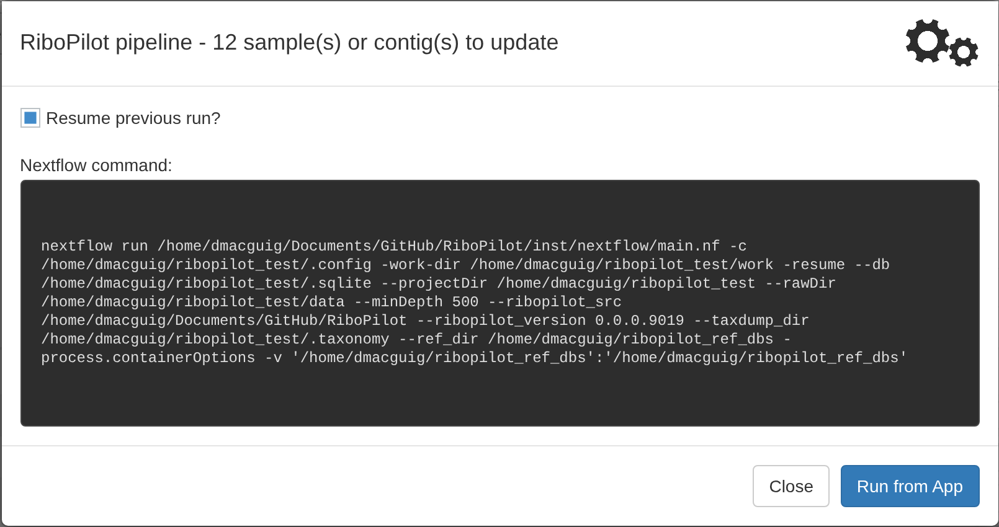
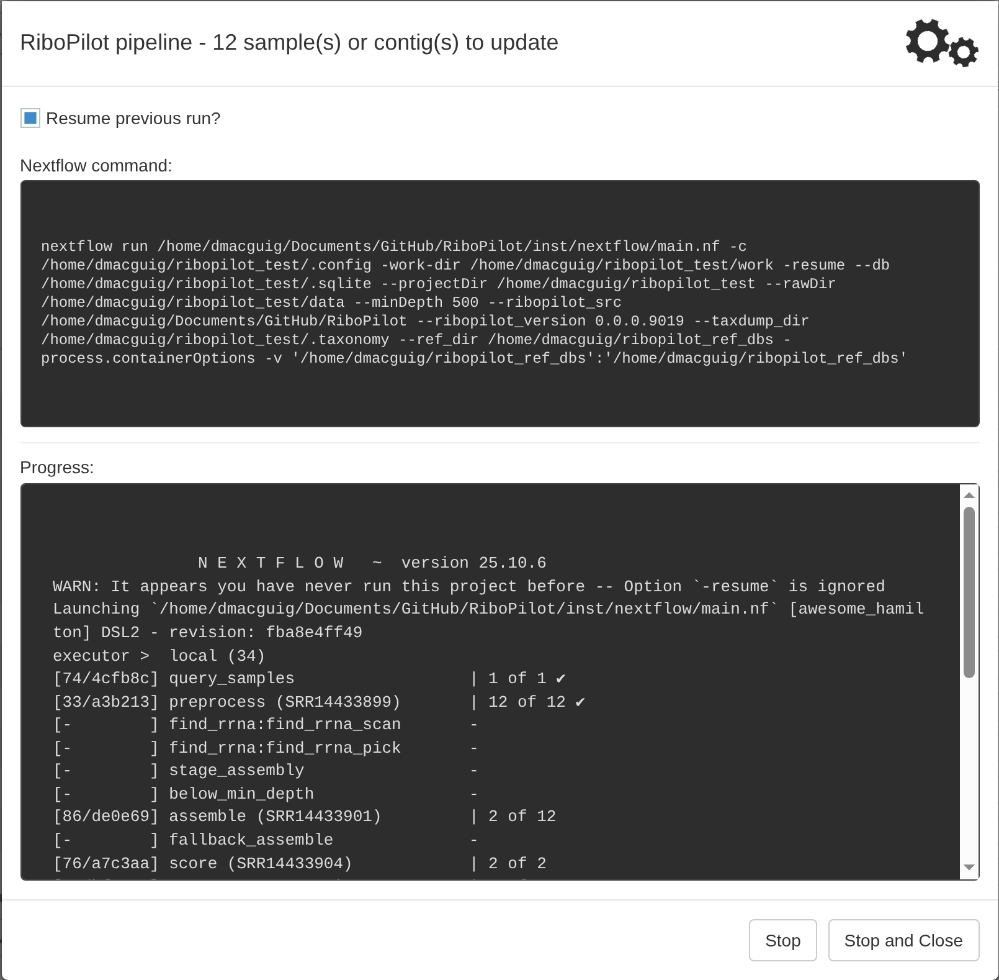
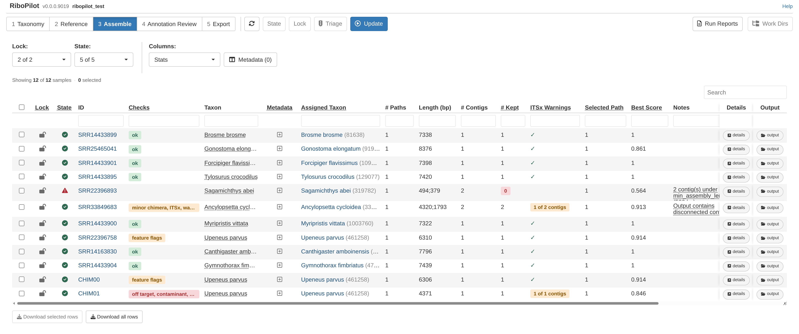
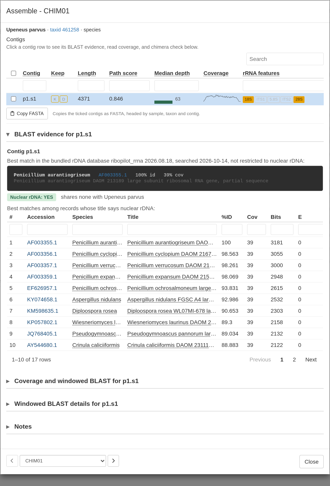
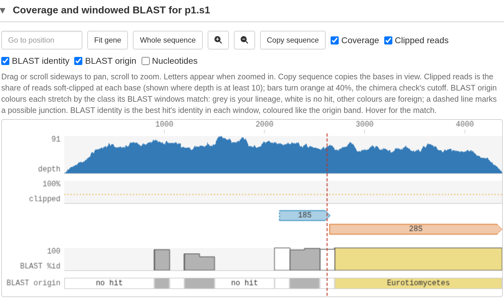
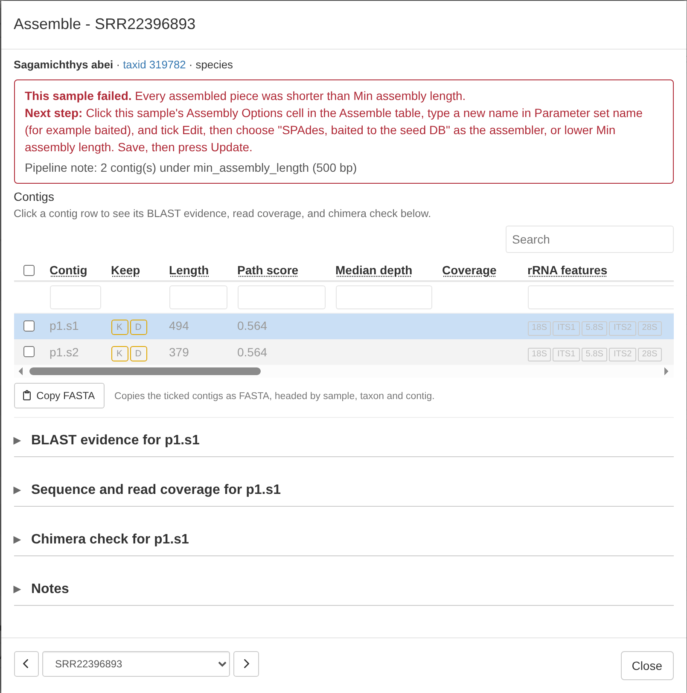
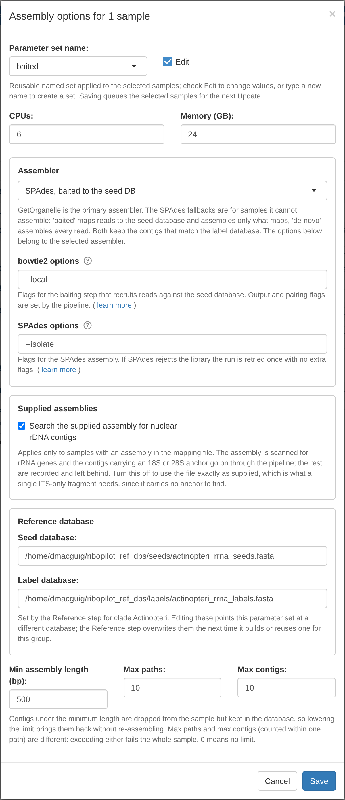
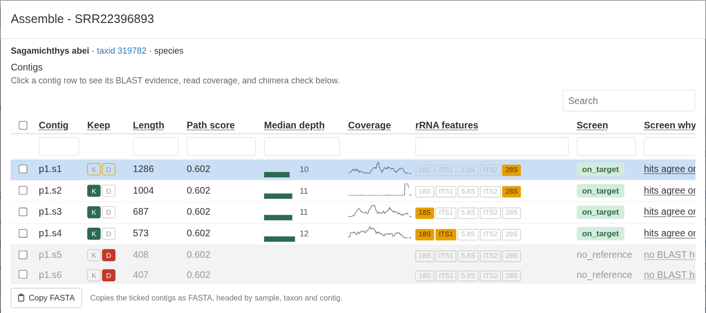

Test project: 0. Get started 1. Taxonomy 2. Reference 3. Assemble 4. Annotation Review 5. Export
Run the pipeline
To start the pipeline, press Update. The run window says how many samples will run and shows the Nextflow command:

Resume previous run? reuses work so that a stopped or failed run picks up where it left off. Leave it ticked.
Press Run from App. Progress shows in the window, one line per step:
HYDRA Submit as job. Press Submit as job in place of Run from App; see Submit a run as a job.

Keep this browser tab open and the computer awake while running the pipeline. Closing the tab or pressing Stop stops the run; see Stopping and resuming a run.
One pipeline run does everything for each sample: it cleans the reads, assembles the rDNA, picks and scores the contigs, compares them with GenBank, maps the reads back to compute depth statistics, annotates the five features, runs the quality checks, and proposes which contigs to keep. The test run takes about 20 minutes.
When the run ends, the app reports how it went. A clean run says “Run finished with no failures.” Otherwise it shows a report that names every sample that failed. In the test project one sample fails on purpose:

If a step of the pipeline stops with an error, the report also names the sample, the step, the error code, and the likely cause. The Troubleshooting page explains how to interpret the report in more detail.
You can examine these reports later by clicking the Run Reports button in the top right corner of the app.
Examine the results
The Assemble table has one row per sample:

The columns to look at first:
- State: a green check means the sample finished; a red triangle means it failed. Hover over the icon to see what it means.
- Lock: shows an open lock icon until you lock the sample.
- Checks: summary of all quality checks for the sample. Red means a potentially serious issue, amber is worth a look but possibly benign, green is ok, and gray means there was nothing to compare with. See The Checks column.
- # Paths, # Contigs, and # Kept: how many assembly paths and contigs the assembly produced, and how many contigs are kept. 0 kept contigs means there is nothing to export.
- ITSx Warnings: shows any issues reported by the ITSx check; see the ITSx check.
- Notes: what the pipeline noted about the sample, for example why it failed.
- User Notes: your own notes on the sample, typed in the Notes box at the bottom of its details window.
In the Assemble step, you mostly choose which contigs to keep or drop. Trimming contigs and adjusting gene boundaries happens in the Annotation Review step.
RiboPilot runs a triage process during the pipeline that automatically keeps or drops contigs. Use the Triage button at the top of the app to modify how the triage rules work and run the process again for selected samples. Quality checks and flags explains the triage rules.
View sample assembly details
Click a sample’s ID to open its details. This window lists the sample’s contigs, each with K (keep) and D (drop) buttons, as well as other information like coverage, features annotated, and the verdict from the BLAST screen.
Clicking a contig row in the table highlights that row in blue. The BLAST evidence, Coverage and windowed BLAST, and Windowed BLAST details panels all show information for the highlighted contig.
CHIM01 is an artificial chimeric contig, crated by joining sequence data from Penicillium mold and the fish species Upeneus parvus. The BLAST evidence shows that the best overall match is a Penicillium mold:

The Coverage and windowed BLAST viewer shows more detail about the chimeric sequence. In the BLAST origin track, segments are colored by BLAST taxonomic match (gray is the sample’s own lineage, yellow in this case represents the mold sequence). A dashed red line marks approximate position of the join between the fish and the mold sequences, near 2,625 bp. You can hover over the track to see more details.
The Windowed BLAST details panel provides more detail about the BLAST results for each section of the chimeric contig.

Rescue a sample that failed
One sample in the test project is expected to fail: every contig assembled for SRR22396893 is shorter than the default 500 bp minimum. Its State shows a red triangle. The sample’s details window shows additional information:

To try fixing the failed sample:
- Click that sample’s Assembly Options cell.
- Type a new name in Parameter set name, for example
baited, and tick Edit. - Under Assembler, choose SPAdes, baited to the seed DB.
- Press Save. The sample is set to Ready to run.
- Press Update, then Run from App.

HYDRA CPUs and memory are per-job requests. On Hydra the CPUs and Memory (GB) in an options window become each job’s request to the scheduler. A request of more than 8 GB per CPU is flagged as a high-memory job automatically. See the Hydra wiki for the compute nodes on offer.
When the run finishes, open SRR22396893’s details again. Baited SPAdes recovers four contigs over 500 bp, but none spans the whole 18S-to-28S region. Read depth for all of the contigs is low, which is likely why the we cannot assemble a larger contig.

For more information about assemblers in RiboPilot, see Choosing an assembly method